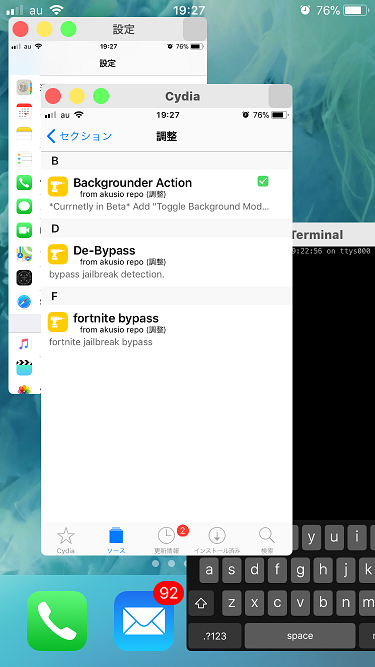

v0.1.4betaを最後にアップデートを終了します。
今までご支援等ありがとうございました
アプリをウィンドウ化するtweakです。
まぁまぁ安定してます（自環境では）
iPadだとウィンドウからウィンドウへDrag&Dropできます
iPhoneXだとジェスチャが被って動かないかも

アップデート内容
v0.1.4beta
・初期ウィンドウサイズ修正 (fix initially window size)
v0.1.3beta
・画面回転まだバグってた(fix rotation)
v0.1.2beta
・カスタムテーマ対応 (custom theme support)
└/var/mobile/Library/Preferences/jp.akusio.milkywaytheme.plist
v0.1.1beta
・画面回転の黒枠修正 (fix rotation animation)
v0.1.0beta
・A12 & Sileo (NOT TESTED)
v0.0.7beta & v0.0.8beta
・足りないファイルの修正(v0.0.8）
・iOS12対応（一応）
・自動でForegroundにするように修正
・Backgrounder Action for CCSupportでも動くように修正
└どちらかが入ってれば動きます。
v0.0.6beta
・ウィンドウを閉じた時自動的にNative Modeに戻るように
└これもそのうち設定で切り替えできるようにします
v0.0.5beta
・Backgrounder Actionも一緒にアップデートしてください
・一時的にウィンドウサイズの下限を撤廃
・キーボードだけフルスクリーン表示するように
├そのうち設定で切り替えできるようにします
└現在の画面方向とウィンドウ内の方向が同じ場合のみ
・ウィンドウから通常の表示に戻れるように修正
・灰ボタンの機能をアスペクト比ロック/アンロックに
・ウィンドウ化した際、スイッチャーを閉じるように
├若干の不安定要素
├ホーム画面→スイッチャーからウィンドウ化なら問題ないんですが
├アプリ画面→スイッチャーからウィンドウ化すると
├スイッチャーを閉じた時にアプリのviewがおかしくなるようで
├スイッチャーを閉じる→ウィンドウ化するようにしました
├アニメーション終了を待つので
├ウィンドウ化までに1秒くらいタイムラグがあります
├もし灰色のウィンドウが出るようであれば
├面倒ですがホーム画面→スイッチャーから
└ウィンドウ化してください
動作確認済み端末
iPhone8 iOS11.1 Electra
iPad Pro iOS11.3.1 unc0ver
*最新ベータ版のActivatorと
Backgrounder Actionが必要です*
----*使い方*-----
ウィンドウ化したいアプリを
Backgrounder ActionでForeground Modeにします
その後スイッチャーを出し、アプリの画面を
長押しするとウィンドウ化します
※Foreground Modeではないアプリはウィンドウ化しません
タイトルバー右側
赤ボタン：ウィンドウを消す
黄ボタン：最小化
緑ボタン：最大化
タイトルバー左側
灰ボタン：ウィンドウのサイズ調整
ダブルタップでアスペクト比調整+固定/固定解除
-----*既知の問題*-----
ウィンドウ化したアプリが画面回転しない
└仕様でいいかなと思い始めてる
iPadでsplit viewとかslide overと組み合わせると操作不能になる
├物理ボタンでリスプリングするか、
└sshでkillall -9 SpringBoardで
5.僕のtwitterアカウントが消えている